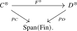
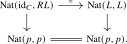
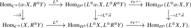
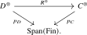
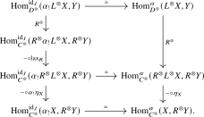

The definition of symmetric monoidal \(\infty \)-categories as commutative monoids in \(\Cat _{\infty }\) makes it easy to talk about symmetric monoidal functors. It is a priori less clear how to define lax symmetric monoidal functors: functors \(F\colon C \to D\) that come equipped with lax structure maps \[ F(X_1) \otimes \dots \otimes F(X_n) \to F(X_1 \otimes \dots \otimes X_n), \] for \(X_1, \dots , X_n \in C\), that are coherently compatible with the symmetric monoidal structures of \(C\) and \(D\). The operadic perspective on symmetric monoidal \(\infty \)-categories provides a quick definition:
Definition 14.3.1. Let \(C\) and \(D\) be symmetric monoidal \(\infty \)-categories. A lax symmetric monoidal functor \(C \to D\) is a morphism of \(\infty \)-operads \(\Mm _C \to \Mm _D\). An oplax symmetric monoidal functor is a morphism of \(\infty \)-operads \(\Mm _{C\catop } \to \Mm _{D\catop }\). We denote by \[ \Cat _{\infty }^{\otimes \text {-lax}} \quad \subseteq \quad \Op _{\infty } \] the full subcategory spanned by the (multimorphism operads of) symmetric monoidal \(\infty \)-categories.
We write \[ \Fun ^{\otimes \text {-lax}}(C,D) := \Fun _{\Op _{\infty }}(\Mm _C,\Mm _D) \] for the \(\infty \)-category of lax symmetric monoidal functors from \(C\) to \(D\).
The \(\infty \)-category \(\Fun ^{\otimes }(C,D)\) identifies with the full subcategory of \(\Fun ^{\otimes \text {-lax}}(C,D)\) spanned by the lax symmetric monoidal functors whose structure maps are isomorphisms.
Let us unwind how to recover the lax structure maps. An operad map \(\Mm _C \to \Mm _D\) is encoded by a commutative triangle of the form

Passing to fibers over \(\lra {1}\) gives an underlying functor \(F\colon C \to D\). The fact that \(F^{\otimes }\) preserves finite products means that on objects it is given as \(F^{\otimes }(X_1, \dots , X_n) = (F(X_1), \dots , F(X_n))\), and this also fully specifies \(F^{\otimes }\) on inert maps. To understand what \(F^{\otimes }\) does on active maps, it suffices to consider the case \((X_1, \dots , X_n) \to X_1 \otimes \dots \otimes X_n\), for which the image in \(D^{\otimes }\) takes the form of a map \[ (F(X_1), \dots , F(X_n)) \to F(X_1 \otimes \dots \otimes X_n) \] lifting the span \(\lra {n} \xleftarrow {=} \lra {n} \to \lra {1}\). This map uniquely factors through the cocartesian morphism \((F(X_1), \dots , F(X_n)) \to F(X_1) \otimes \dots \otimes F(X_n)\), resulting in the expected lax structure map.
For oplax symmetric monoidal functors the structure maps point the other way.
Construction 14.3.2. For an \(\infty \)-operad \(\Oo \), the construction \(C \mapsto \Alg _{\Oo }(C)\) defines a functor \[ \Alg _{\Oo }(-) := \Fun _{\Op _{\infty }}(\Oo ,-)\colon \Cat _{\infty }^{\otimes \text {-lax}} \to \Cat _{\infty }. \] Given a lax symmetric monoidal functor \(F\colon C \to D\), the induced functor \(\Alg _{\Oo }(C) \to \Alg _{\Oo }(D)\) is given by postcomposition with \(\Mm _C \to \Mm _D\). Its functoriality follows directly from functoriality of postcomposition in the defining fibers of functor categories.
14.3.1 Symmetric monoidal adjunctions
The main goal of this subsection is to show that the right adjoint of a symmetric monoidal functor is canonically lax symmetric monoidal. We will then use the resulting symmetric monoidal adjunction to obtain adjunctions on categories of algebras.
To formulate the compatibility of the lifted adjunction with the maps to \(\Span (\Fin )\), we first record the small amount of relative adjunction theory that we will need. Given two functors \(p\colon C \to B\) and \(q\colon D \to B\), we write \[ \Fun _{/B}(C,D) := \Fun (C,D)\times _{\Fun (C,B)}\{p\}, \] where the map to \(\Fun (C,B)\) is given by postcomposition with \(q\). Thus an object of \(\Fun _{/B}(C,D)\) consists of a functor \(H\colon C \to D\) together with a specified identification \(qH \simeq p\).
Definition 14.3.3 (Relative adjunction). Let \(L\) be an object of \(\Fun _{/B}(C,D)\). A right adjoint to \(L\) relative to \(B\) consists of an object \(R \in \Fun _{/B}(D,C)\) together with a morphism \[ \epsilon \colon LR \to \id _D \] in \(\Fun _{/B}(D,D)\) whose image in \(\Fun (D,D)\) exhibits the underlying functor of \(R\) as a right adjoint to the underlying functor of \(L\). We then call \(L\dashv R\) an adjunction relative to \(B\).
The definition is counit-oriented. Equivalently, we may specify the unit as a morphism over the base:
Lemma 14.3.4 (Unit formulation of relative adjunctions). Let \(L \in \Fun _{/B}(C,D)\) and \(R \in \Fun _{/B}(D,C)\). The following data are equivalent:
- (1)
-
A morphism \(\epsilon \colon LR \to \id _D\) in \(\Fun _{/B}(D,D)\) which exhibits \(R\) as a right adjoint to \(L\) after forgetting to \(\Fun (D,D)\).
- (2)
-
A morphism \(\eta \colon \id _C \to RL\) in \(\Fun _{/B}(C,C)\) which exhibits \(L\) as a left adjoint to \(R\) after forgetting to \(\Fun (C,C)\).
Proof. Suppose first that the data in (1) are given. By Proposition 21.1.2, composition with the counit gives an equivalence \[ \Nat (\id _C,RL) \xrightarrow {\simeq } \Nat (L,L), \qquad \alpha \longmapsto (\epsilon L)(L\alpha ). \] Under the specified identifications over \(B\), the fact that \(\epsilon \) is a morphism in \(\Fun _{/B}(D,D)\) gives a commutative square

It therefore restricts to an equivalence on the fibers over \(\id _p\), which are the hom animae \[ \Hom _{\Fun _{/B}(C,C)}(\id _C,RL) \xrightarrow {\simeq } \Hom _{\Fun _{/B}(C,D)}(L,L). \] The preimage of \(\id _L\) gives a morphism \(\eta \colon \id _C \to RL\) over \(B\), together with an identification \((\epsilon L)(L\eta ) \simeq \id _L\) in \(\Fun _{/B}(C,D)\). After forgetting the maps to \(B\), this is the unit corresponding to \(\epsilon \) under Proposition 21.1.2, so it gives the data in (2).
Conversely, starting from (2), composition with the unit gives an equivalence \[ \Nat (LR,\id _D) \xrightarrow {\simeq } \Nat (R,R), \qquad \beta \longmapsto (R\beta )(\eta R). \] It likewise restricts to the fibers over the identity transformation of \(q\), and the preimage of \(\id _R\) supplies the counit in (1), together with the other triangle identification over \(B\). These constructions are inverse because they are the usual equivalence between unit and counit data from Proposition 21.1.2, restricted to the indicated fibers. □
Lemma 14.3.5 (Relative adjunctions on functor categories). Let \(L\colon C\rightleftarrows D\noloc R\) be an adjunction relative to \(B\). For every functor \(E \to B\), postcomposition induces an adjunction \[ L_*\colon \Fun _{/B}(E,C) \rightleftarrows \Fun _{/B}(E,D)\noloc R_*. \]
Proof. The counit in Definition 14.3.3 and the corresponding unit of Lemma 14.3.4 may both be whiskered with a functor \(E \to C\) or \(E \to D\) over \(B\). They therefore give a unit and counit between the displayed functors, with triangle identifications inherited from those of \(L\dashv R\). The result follows from Proposition 21.1.2. □
We now produce the promised lax symmetric monoidal structure on the right adjoint of a symmetric monoidal functor.
Proposition 14.3.6. Let \(L\colon C \to D\) be a symmetric monoidal functor between symmetric monoidal \(\infty \)-categories. Assume that \(L\) (as a plain functor from \(C\) to \(D\)) admits a right adjoint \(R\colon D \to C\). Then the following statements hold:
- (1)
-
The functor \(L^{\otimes }\colon C^{\otimes } \to D^{\otimes }\) admits a right adjoint \(R^{\otimes }\colon D^{\otimes } \to C^{\otimes }\).
- (2)
-
The functor \(R^{\otimes }\) has a canonical structure as a functor over \(\Span (\Fin )\) for which \(L^{\otimes }\dashv R^{\otimes }\) is a relative adjunction over \(\Span (\Fin )\).
- (3)
-
With this structure, \(R^{\otimes }\) defines a morphism of \(\infty \)-operads from \(\Mm _D\) to \(\Mm _C\).
- (4)
-
The underlying functor of this operad map is \(R\colon D \to C\).
In particular, the right adjoint of a symmetric monoidal functor is canonically lax symmetric monoidal.
Proof. (1) By the pointwise criterion for right adjoints from Lemma 21.1.4, it will suffice to show that for every object \(Y = \{y_j\}_{j \in J} \in D^{\otimes }\) there exists an object \(R^{\otimes }Y\) together with a counit map \(\epsilon _Y\colon L^{\otimes }R^{\otimes }Y \to Y\) such that for every other \(X \in C^{\otimes }\) the composite \begin {equation} \label {eq:Monoidal_Adjunction} \Hom _{C^{\otimes }}(X,R^{\otimes }Y) \xrightarrow {L^{\otimes }} \Hom _{D^{\otimes }}(L^{\otimes }X,L^{\otimes }R^{\otimes }Y) \xrightarrow {\epsilon _Y \circ -} \Hom _{D^{\otimes }}(L^{\otimes }X,Y) \end {equation} is an equivalence. We define \(R^{\otimes }Y := \{Ry_j\}_{j \in J}\). We then have \(L^{\otimes }R^{\otimes }Y \simeq \{LRy_j\}_{j \in J}\) and so the counit map \(\epsilon _Y\) may be taken to be the collection of morphisms \(\epsilon _{y_j}\colon LRy_j \to y_j\), resulting in a morphism in \(D^{\otimes }_J \simeq \prod _{j \in J} D\).
To show that the composite (14.1) is an equivalence, it suffices to show that it induces an equivalence on the fibers over any span \(\alpha \colon I \xleftarrow {f} K \xrightarrow {g} J\) in \(\Span (\Fin )\). Let \(\widetilde {\alpha }\colon X \to \alpha _!X\) denote a cocartesian lift of the span \(\alpha \). Since \(L^{\otimes }\) preserves cocartesian morphisms, also the map \(L^{\otimes }(\widetilde {\alpha }) \colon L^{\otimes }X \to L^{\otimes }\alpha _!X\) is cocartesian. Precomposition with these maps then induces a commutative diagram

Since the vertical maps induce equivalences on fibers over \(\Hom _{\Span (\Fin )}(J,J) \xrightarrow {- \circ \alpha } \Hom _{\Span (\Fin )}(I,J)\), we have thus reduced to the case of the identity span \(\alpha = \id _J\). In this case, the fibers are the hom animae in the fibers \(C^{\otimes }_J \simeq \prod _{j \in J} C\) and \(D^{\otimes }_J \simeq \prod _{j \in J} D\) respectively. The claim thus follows from the fact that for every \(j \in J\) the composite \[ \Hom _C((\alpha _!X)_j, Ry_j) \xrightarrow {L} \Hom _D(L(\alpha _!X)_j, LRy_j) \xrightarrow {\epsilon _{y_j} \circ -} \Hom _D(L(\alpha _!X)_j, y_j) \] is an equivalence due to the adjunction \(L \dashv R\).
(2) We will now equip \(R^{\otimes }\) with the structure of a functor over \(\Span (\Fin )\). We claim that it makes the following diagram commute:

To this end, we claim that the adjunction counit \(\epsilon \colon L^{\otimes } R^{\otimes } \to \id _{D^{\otimes }}\) induces an equivalence \[ p_C R^{\otimes } \simeq p_D L^{\otimes } R^{\otimes } \xrightarrow {p_D \epsilon } p_D \id _{D^{\otimes }} \simeq p_D. \] This may be checked objectwise for \(X \in D^{\otimes }\), where it is clear from the construction of \(\epsilon _X\). The displayed identification equips \(R^{\otimes }\) with the structure of a functor over \(\Span (\Fin )\) and lifts \(\epsilon \) to a morphism in \(\Fun _{/\Span (\Fin )}(D^{\otimes },D^{\otimes })\). Thus \(L^{\otimes }\dashv R^{\otimes }\) is a relative adjunction over \(\Span (\Fin )\) by Definition 14.3.3.
(3) The functor \(R^{\otimes }\) preserves finite products because it is a right adjoint. Thus \(R^{\otimes }\) is an operad map.
(4) By uniqueness of adjoints, the restriction of \(R^{\otimes }\) to \(D = D^{\otimes }_{\lra {1}}\) is \(R\), and we deduce that \(R^{\otimes }\) is a lax symmetric monoidal refinement of \(R\). □
Remark 14.3.7. In the previous proposition, it does not suffice for \(L\) to be a lax symmetric monoidal functor itself. It would suffice for \(L\) to be an oplax symmetric monoidal functor, but producing the lax symmetric monoidal right adjoint is more subtle in this case. Dually, the left adjoint to a lax symmetric monoidal functor is oplax symmetric monoidal. We refer to [Haugseng et al. (2023), Proposition A] for a detailed discussion.
Definition 14.3.8. A symmetric monoidal adjunction is an adjunction \[ L\colon C\rightleftarrows D\noloc R \] between symmetric monoidal \(\infty \)-categories in which \(L\) is symmetric monoidal and \(R\) is equipped with the canonical lax symmetric monoidal structure of Proposition 14.3.6.
By part (2) of Proposition 14.3.6, the induced adjunction \(L^{\otimes }\dashv R^{\otimes }\) is relative over \(\Span (\Fin )\). We may deduce from this that symmetric monoidal adjunctions induce adjunctions on algebras over every \(\infty \)-operad.
Lemma 14.3.9 (Adjunctions on \(\Oo \)-algebras). Every symmetric monoidal adjunction \(L\dashv R\) induces, for each \(\infty \)-operad \(\Oo \), an adjunction \[ \Alg _{\Oo }(L)\colon \Alg _{\Oo }(C) \rightleftarrows \Alg _{\Oo }(D)\noloc \Alg _{\Oo }(R). \] The underlying functors are obtained by applying \(L\) and \(R\), respectively, at every color of \(\Oo \).
Proof. By part (2) of Proposition 14.3.6, the adjunction \(L^{\otimes }\dashv R^{\otimes }\) is relative to \(\Span (\Fin )\). Applying Lemma 14.3.5 to \(p_{\Oo }\colon \Oo ^{\otimes } \to \Span (\Fin )\) gives an adjunction \[ \Fun _{/\Span (\Fin )}(\Oo ^{\otimes },C^{\otimes }) \rightleftarrows \Fun _{/\Span (\Fin )}(\Oo ^{\otimes },D^{\otimes }). \] Postcomposition with both functors preserves finite-product-preserving functors because \(L^{\otimes }\) and \(R^{\otimes }\) are morphisms of \(\infty \)-operads. Restricting the adjunction to these subcategories gives the asserted adjunction on \(\Alg _{\Oo }(C)\) and \(\Alg _{\Oo }(D)\). □
As an application, it follows that limits of \(\Oo \)-algebras may be computed pointwise.
Proposition 14.3.10 (Limits of \(\Oo \)-algebras). Let \(C\) be a symmetric monoidal \(\infty \)-category, let \(\Oo \) be an \(\infty \)-operad, and let \(I\) be a small \(\infty \)-category such that \(C\) admits \(I\)-indexed limits. Then \(\Alg _{\Oo }(C)\) admits \(I\)-indexed limits, and the evaluation functors \[ \ev _x\colon \Alg _{\Oo }(C)\to C, \qquad A\mapsto A_x \qquad (x\in \Oo ^{\simeq }), \] jointly create them.
Proof. By Corollary 21.2.2, the constant-diagram functor fits into an adjunction \[ \const \colon C\rightleftarrows \Fun (I,C)\noloc \lim _I. \] Being given by restriction along \(I \to *\), the functor \(\const \) is symmetric monoidal for the pointwise symmetric monoidal structure, so Proposition 14.3.6 makes this a symmetric monoidal adjunction. By Lemma 14.3.9, it induces an adjunction \[ \Alg _{\Oo }(C) \rightleftarrows \Alg _{\Oo }(\Fun (I,C)) \simeq \Fun (I,\Alg _{\Oo }(C)). \] Under the equivalence of Lemma 14.2.12, the left adjoint is the constant-diagram functor. The right adjoint consequently computes limits in \(\Alg _{\Oo }(C)\), and its value at every color \(x\) is \(\lim _I A_x\). Thus all the evaluation functors preserve these limits. They jointly detect isomorphisms: every object of \(\Oo ^{\otimes }\) is a finite product of colors, and algebra maps preserve these products, so a natural transformation that is invertible at every color is invertible at every object. Consequently the evaluation functors jointly reflect limit cones and hence jointly create the limits. □
14.3.2 Symmetric monoidal left adjoints
As discussed in Remark 14.3.7, it is possible to show that the left adjoint of a lax symmetric monoidal functor admits a canonical oplax symmetric monoidal structure. While this is subtle to construct in general, the construction substantially simplifies when this left adjoint happens to be actually symmetric monoidal.
Proposition 14.3.11. Let \(R\colon D \to C\) be a lax symmetric monoidal functor between symmetric monoidal \(\infty \)-categories. Assume that \(R\) (as a plain functor from \(D\) to \(C\)) admits a left adjoint \(L\colon C \to D\) such that for all \(n \geq 0\) and objects \(x_1, \dots , x_n \in C\) the composite \[ L(\bigotimes _{i=1}^n x_i) \xrightarrow {L(\bigotimes _{i=1}^n \eta _{x_i})} L(\bigotimes _{i=1}^n RLx_i) \xrightarrow {L(\lax _R)} LR(\bigotimes _{i=1}^n Lx_i) \xrightarrow {\epsilon } \bigotimes _{i=1}^n L(x_i) \] is an isomorphism in \(D\). Then the following statements hold:
- (1)
-
The functor \(R^{\otimes }\colon D^{\otimes } \to C^{\otimes }\) admits a left adjoint \(L^{\otimes }\colon C^{\otimes } \to D^{\otimes }\).
- (2)
-
The functor \(L^{\otimes }\) has a canonical structure as a functor over \(\Span (\Fin )\) for which \(L^{\otimes }\dashv R^{\otimes }\) is a relative adjunction over \(\Span (\Fin )\).
- (3)
-
With this structure, \(L^{\otimes }\) defines a morphism of \(\infty \)-operads from \(\Mm _C\) to \(\Mm _D\).
- (4)
-
This morphism of \(\infty \)-operads comes from a symmetric monoidal functor from \(C\) to \(D\) refining \(L\).
In particular, \(R\) admits a strong symmetric monoidal left adjoint \(L\colon (C,\otimes _C) \to (D,\otimes _D)\).
Note that by induction it suffices to check the condition on \(L\) for \(n = 0\) and \(n = 2\), i.e. it suffices to show that the two canonical maps \[ L(\unit _C) \to \unit _D \qquadtext { and } L(x \otimes y) \to L(x) \otimes L(y) \] are isomorphisms.
Proof. (1) As in the proof of Proposition 14.3.6, we use the pointwise criterion for left adjoints from Lemma 21.1.4. We define \(L^{\otimes }\) objectwise as \(L^{\otimes }(\{x_i\}_{i \in I}) := \{L(x_i)\}_{i \in I}\); the unit maps \(\eta _{x_i} \colon x_i \to RLx_i\) induce a candidate unit map \(\eta _X \colon X \to R^{\otimes }L^{\otimes }X\). We must show that for every object \(Y \in D^{\otimes }_J\) the composite \[ \Hom _{D^{\otimes }}(L^{\otimes }X, Y) \xrightarrow {R^{\otimes }} \Hom _{C^{\otimes }}(R^{\otimes }L^{\otimes }X, R^{\otimes }Y) \xrightarrow {- \circ \eta _X} \Hom _{C^{\otimes }}(X, R^{\otimes }Y) \] is an equivalence. This may be tested fiberwise over any span \(\alpha \colon I \xleftarrow {f} K \xrightarrow {g} J\). Let \[ X \to \alpha _!X, \qquad L^{\otimes }X \to \alpha _!L^{\otimes }X, \qquadtext { and } R^{\otimes }L^{\otimes }X \to \alpha _!R^{\otimes }L^{\otimes }X \] denote cocartesian lifts of \(\alpha \) in \(C^{\otimes }\) and \(D^{\otimes }\), and let \(\lax _R\colon \alpha _!R^{\otimes }L^{\otimes }X \to R^{\otimes }\alpha _!L^{\otimes }X\) denote the lax structure map of \(R\) associated to \(\alpha \). We then get a commutative diagram as follows:

It will thus suffice to show that the left vertical composite is an equivalence. Under the identifications \(C^{\otimes }_J \simeq \prod _{j \in J} C\) and \(D^{\otimes }_J \simeq \prod _{j \in J} D\), this composite is the product over \(j \in J\) of the analogous composites associated to the restricted spans \[ \alpha _j \colon I \xleftarrow {f|_{g^{-1}(j)}} g^{-1}(j) \longrightarrow \lra {1}. \] Indeed, \(R^{\otimes }\) is a morphism of \(\infty \)-operads and therefore respects these product decompositions; in particular, the \(j\)-th component of \(\lax _R\) is the lax structure map associated to \(\alpha _j\). The map \(\alpha _!\eta _X\) decomposes in the same way. It therefore suffices to treat the case \(J = \lra {1}\). Composing the vertical composite with the adjunction equivalence \(\Hom _C(\alpha _!X, RY) \simeq \Hom _D(L\alpha _!X, Y)\), we obtain a map \[ \Hom _D(\alpha _!L^{\otimes }X, Y) \to \Hom _D(L\alpha _!X,Y) \] which we must show is an equivalence. But unwinding definitions shows that this map is given by precomposition with the composite \[ L\alpha _!X \xrightarrow {L\alpha _!\eta _X} L\alpha _!R^{\otimes }L^{\otimes } X\xrightarrow {L(\lax _R)} LR\alpha _!L^{\otimes }X \xrightarrow {\epsilon _{\alpha _!L^{\otimes }X}} \alpha _!L^{\otimes } X. \] This is precisely the comparison map from the hypothesis for the family \(\{x_{f(k)}\}_{k\in K}\), and is therefore an isomorphism. This proves the existence of the left adjoint \(L^{\otimes }\).
(2) The unit maps \(\eta _X\colon X \to R^{\otimes }L^{\otimes }X\) used in the construction lie in the same fibers of \(C^{\otimes } \to \Span (\Fin )\) as their sources. Their images in \(\Span (\Fin )\) therefore give a natural identification \(p_D L^{\otimes } \simeq p_C\) which equips \(L^{\otimes }\) with the structure of a functor over \(\Span (\Fin )\) and lifts the unit to a morphism in \(\Fun _{/\Span (\Fin )}(C^{\otimes },C^{\otimes })\). By Lemma 14.3.4, this makes \(L^{\otimes }\dashv R^{\otimes }\) a relative adjunction over \(\Span (\Fin )\).
(3) The objectwise formula on tuples shows that \(L^{\otimes }\) preserves finite products. Thus it is a morphism of \(\infty \)-operads. Finally, the comparison isomorphism above identifies \(L^{\otimes }\alpha _!X\) with \(\alpha _!L^{\otimes }X\) for every span \(\alpha \). Hence \(L^{\otimes }\) preserves cocartesian morphisms and is strong symmetric monoidal.
(4) By its objectwise definition, the restriction of \(L^{\otimes }\) to the fiber over \(\lra {1}\) is \(L\). □
Generated from the authoritative LaTeX source.